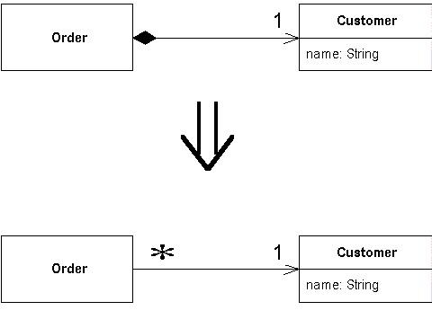

Change Value to Reference
You have a class with many equal instances that you want to replace with a single object.
Turn the object into a reference object.

For more information see page
179
of Refactoring
| Refactoring Home | | Alphabetical List |